Groen dat klopt.
Interieurbeplanting voor bedrijven en stijlvolle woonomgevingen.
Blad & Vorm ontwerpt, levert en onderhoudt interieurbeplanting die rust, sfeer en een verzorgde uitstraling brengt.
Inspiratie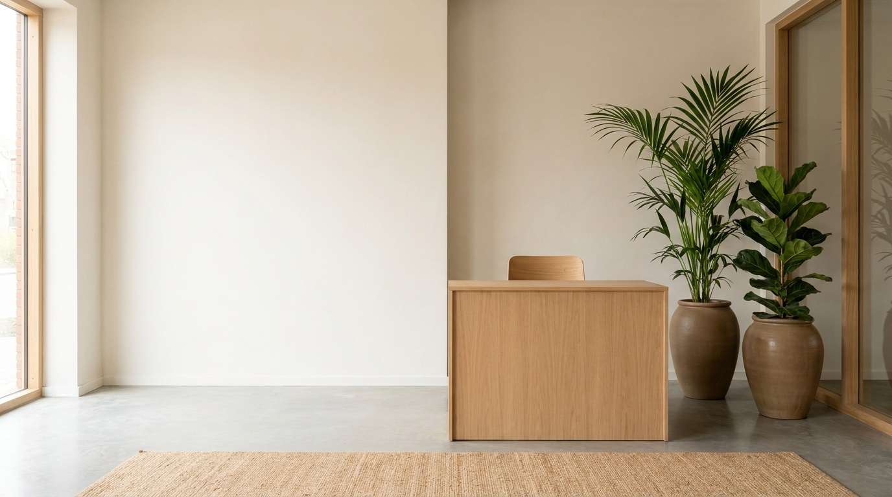
Sfeerbeelden ter inspiratie.
Inspiratie begint met kijken.
Iedere ruimte heeft een eigen karakter. Ontdek hoe interieurbeplanting sfeer, rust en uitstraling toevoegt aan kantoren, ontvangstruimtes, praktijken en stijlvolle woonomgevingen.
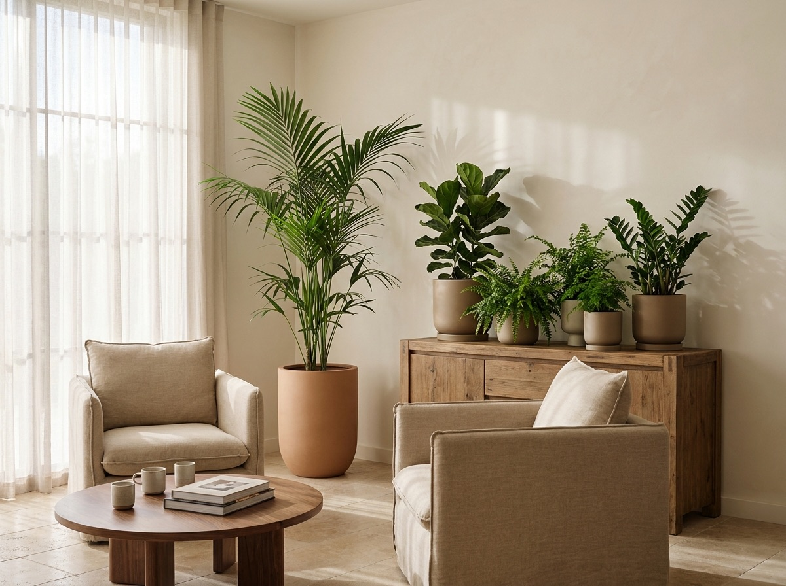
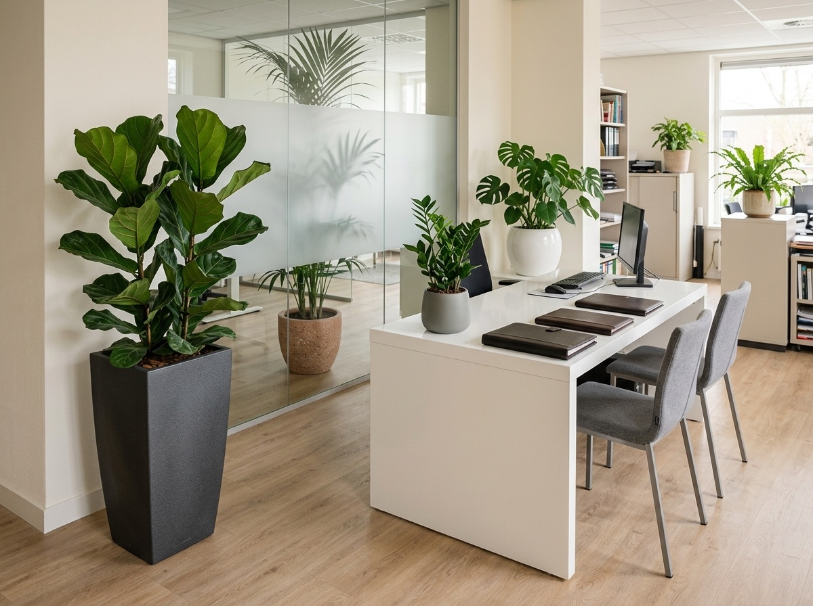
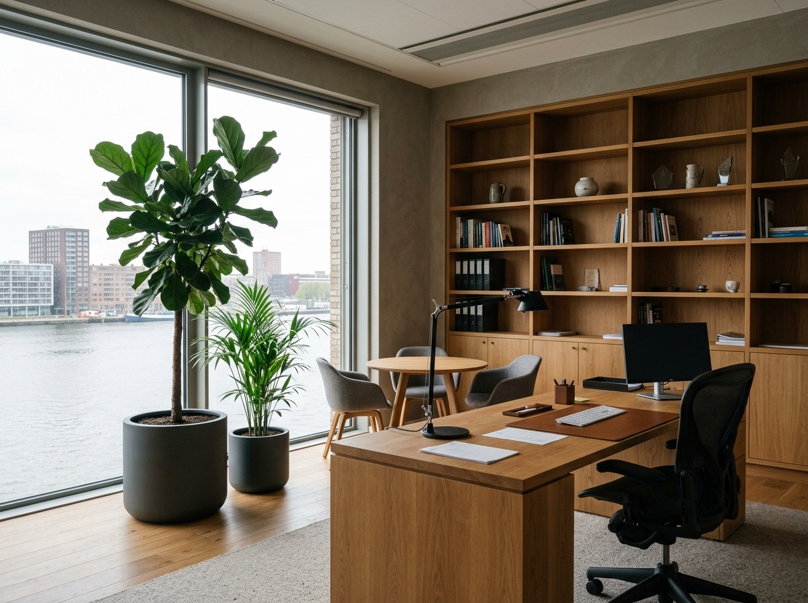
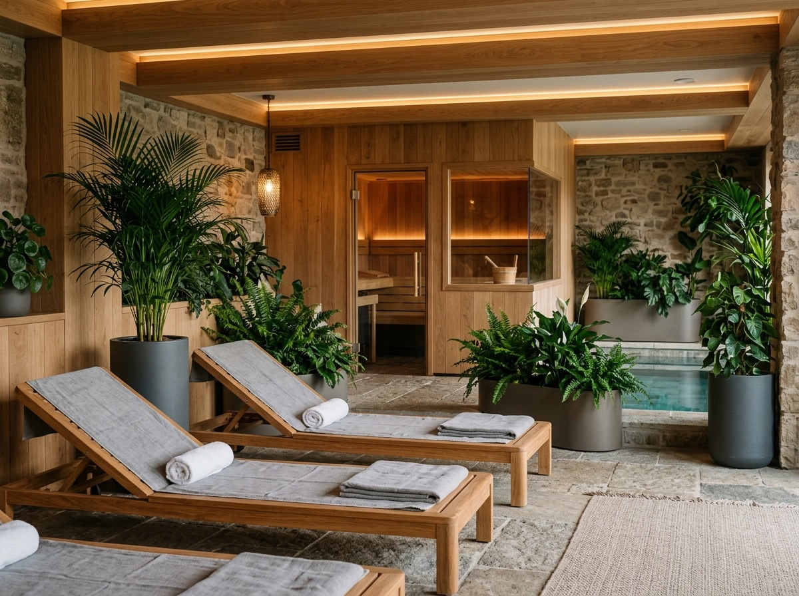
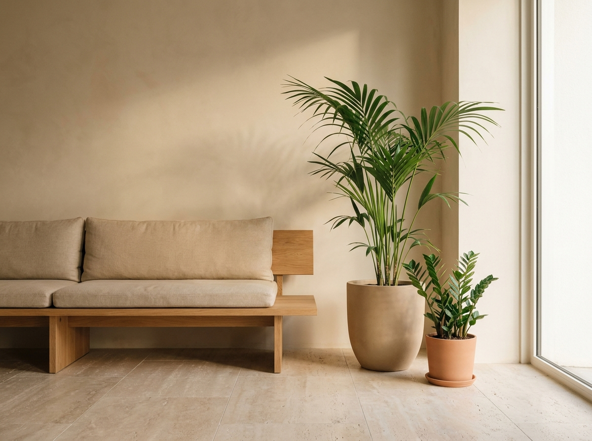
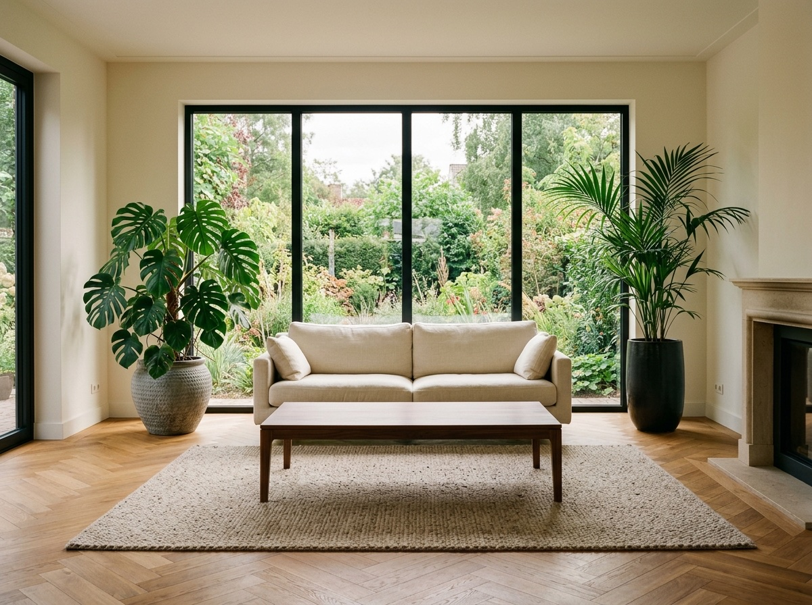
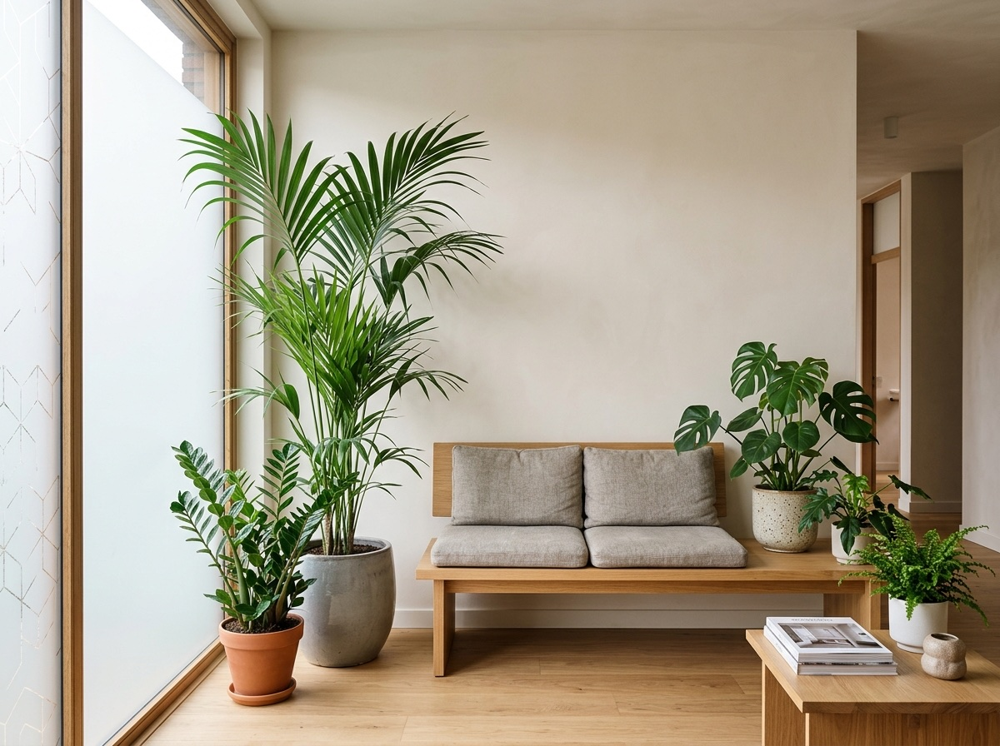
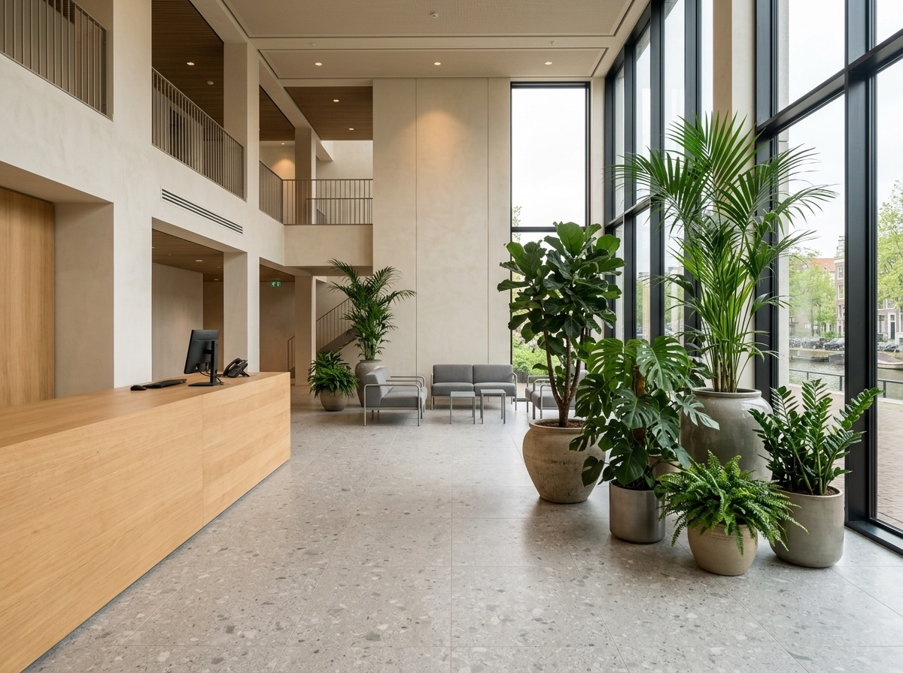
Niet meer, wel het juiste.
Niet ieder interieur vraagt om meer.
Soms vraagt het om precies het juiste.
Iedere ruimte vraagt om een andere vorm van interieurbeplanting. Daarom kiezen wij planten, potten en materialen die perfect aansluiten bij uw interieur, werkomgeving en uitstraling. Zo ontstaat een ruimte die prettig aanvoelt én een verzorgde indruk achterlaat.
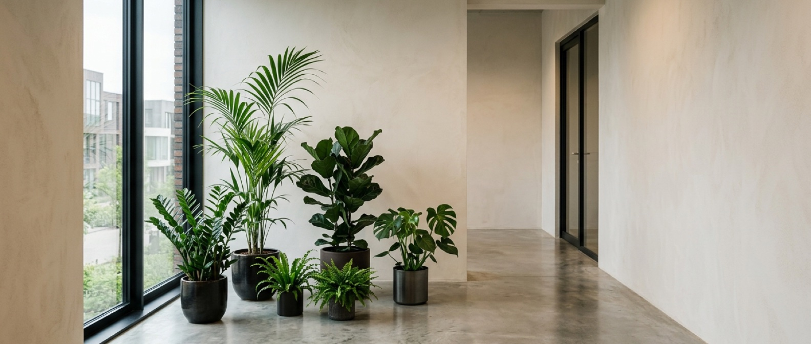
Van advies tot vervanging.
Alles voor een verzorgde en representatieve ruimte.
Advies
Samen bekijken we welke interieurbeplanting het beste past bij uw ruimte, wensen en uitstraling.
Levering & Plaatsing
Professioneel geleverd en zorgvuldig geplaatst, met oog voor ieder detail.
Onderhoud
Regelmatige verzorging zodat uw interieurbeplanting gezond, verzorgd en representatief blijft.
Vervanging
Wanneer nodig vervangen wij planten tijdig, zodat uw interieur altijd verzorgd oogt.
Vier stappen, één aanspreekpunt.
Van kennismaking tot jarenlang verzorgd.
Kennismaking
We luisteren naar uw wensen en bekijken de mogelijkheden.
Ruimtescan
We beoordelen de ruimte, lichtinval en inrichting.
Realisatie
We leveren en plaatsen het complete groenconcept.
Onderhoud
Met periodieke verzorging blijft uw interieurbeplanting jarenlang in topconditie.
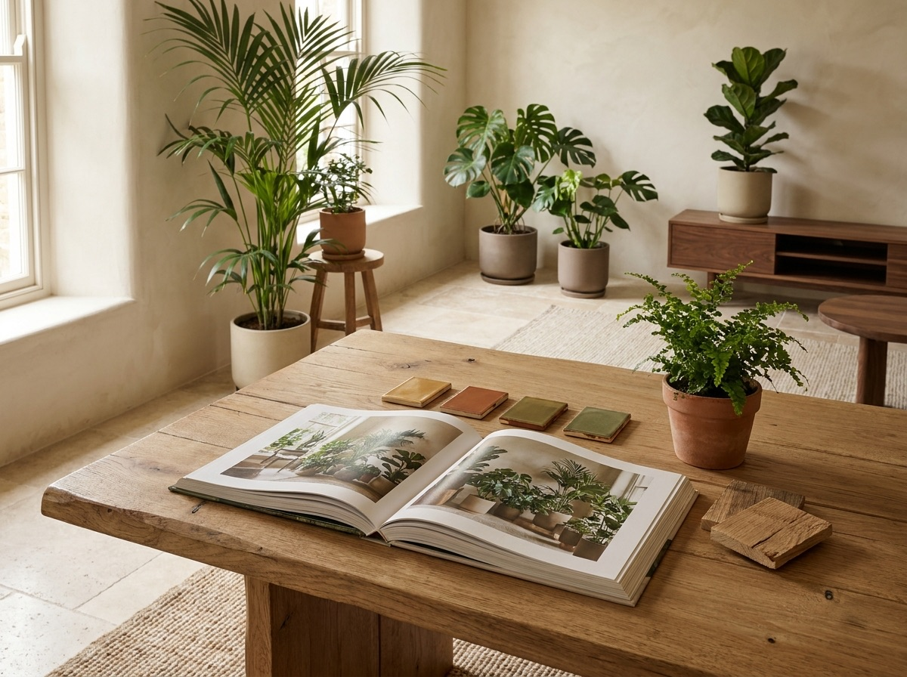
Iedere ruimte begint met inspiratie.
Tijdens een persoonlijke Ruimtescan nemen wij ons Inspiration Book mee. Samen bekijken we planten, potten, materialen en verschillende stijlen. Zo ontstaat een interieurbeplanting die past bij uw organisatie, uw interieur en de uitstraling die u wilt creëren.
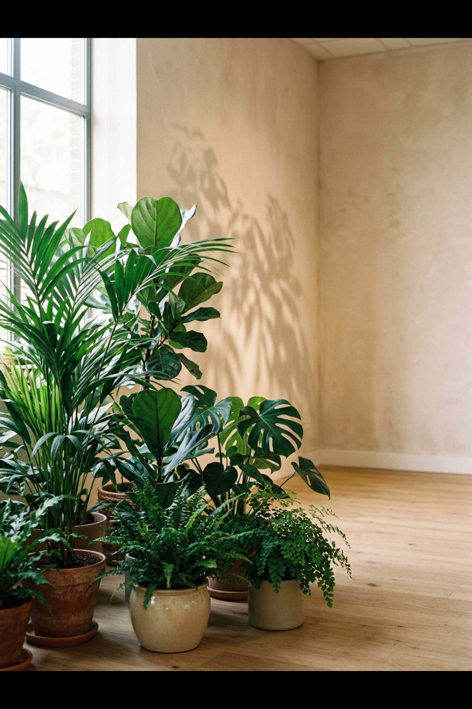
Een passende oplossing voor iedere ruimte.
Impact
95 euro per maandEen stijlvolle groene basis.
- 3 planten
- Hoogte 1,20 tot 1,80 m
- Onderhoud 1 tot 2 keer per maand
Corporate
195 euro per maandMeer groen voor een representatieve werkomgeving.
- 5 tot 7 planten
- Hoogte 1,20 tot 1,80 m
- Onderhoud 1 tot 2 keer per maand
Signature
395 euro per maandWaar interieurbeplanting onderdeel wordt van het interieur.
- 10 tot 15 planten
- Hoogte 1,20 tot 1,80 m
- Onderhoud 2 keer per maand
Prestige
vanaf 695 euro per maandEen compleet verzorgd groenconcept.
- 20 tot 30 planten of meer
- Hoogte 1,20 tot 2,00 m
- Onderhoud 2 keer per maand
- In overleg samengesteld
Groen dat blijft.
Wij geloven dat interieurbeplanting pas echt waarde toevoegt wanneer alles klopt. Daarom combineren wij persoonlijk advies, kwalitatieve planten, stijlvolle potten en professioneel onderhoud tot groenconcepten die jarenlang mooi blijven.
Voor kantoren, praktijken, ontvangstruimtes en stijlvolle woonomgevingen zorgen wij voor interieurbeplanting die past bij de ruimte én bij de mensen die er dagelijks gebruik van maken.
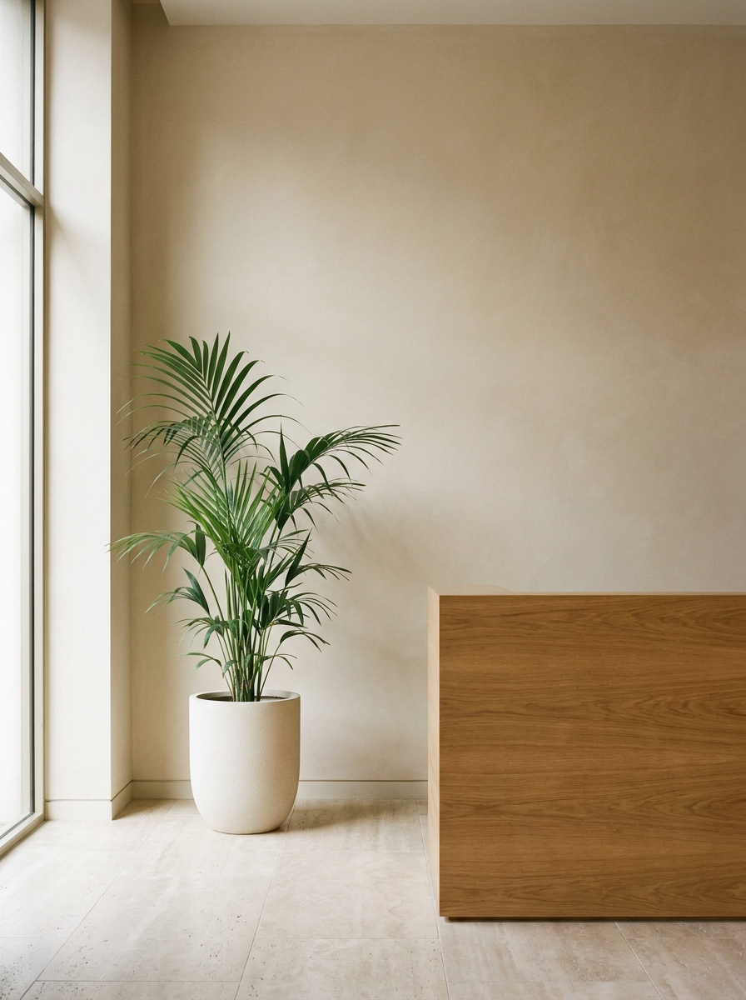
Laten we kennismaken.
Benieuwd wat interieurbeplanting voor uw organisatie of woning kan betekenen? Wij komen graag langs voor een persoonlijke Ruimtescan en nemen ons Inspiration Book mee om samen de mogelijkheden te bekijken.
Vanuit Wassenaar verzorgen wij interieurbeplanting voor bedrijven en stijlvolle woonomgevingen in de regio Den Haag, Voorburg, Leidschendam, Voorschoten, Leiden, Oegstgeest, Warmond, Katwijk en Noordwijk.
Dank voor uw bericht.
U hoort snel van ons.